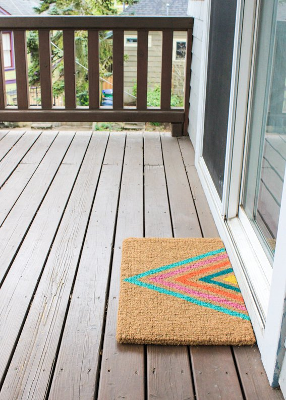
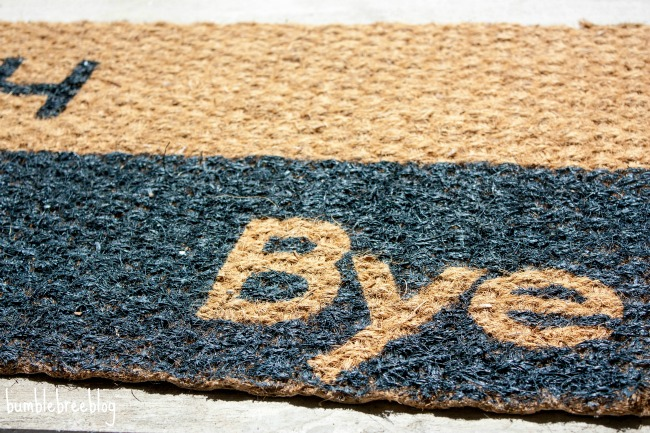
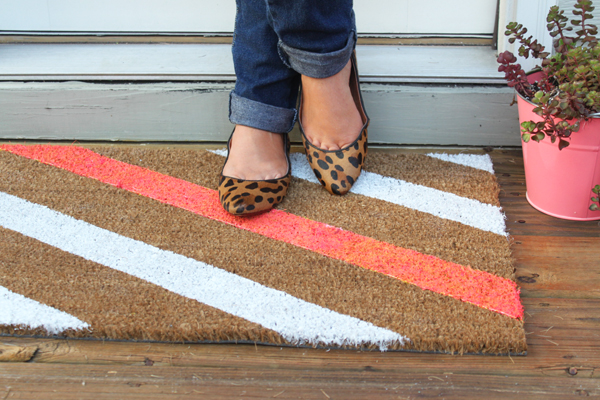

Spring may just be my favorite season. Everything is colorful, there are flowers everywhere and the weather is just the right temperature. With the new season also comes spring showers. Instead of tracking extra moisture in your house, make this geometric welcome mat!
What you'll need:
Start by taping off your design. If you're making the same pattern that I did, I recommend using a ruler to help with initial placement. It also helps to start on the outside of the triangle shape and build your design inward (from biggest to smallest). Paint! To really make sure your paint is applied, it helps to almost stamp it into the mat verses painting in brushstrokes.

Once dry, peel the tape, put on your porch and enjoy!
As you all know by now, we just purchased and moved in to our first home. Our poor sad welcome mat didn’t make the move and I was scowering the web for a new one. I, of course, found my self at the anthropologie website (love me some Anhtropologie) and that is when I saw it. For $38 I could have the mat I wanted. Wawaha. Then I realized I could just DIY my own. That is right, The rug I made cost me less then $7! That is a huge difference from the $38 that Anthroplogie wanted, and I could make mine completely customize-able. Swoop. That is my kind of DIY.
I started off by purchasing a plain mat from Ikea for $5. I measured my very affordable mat and placed some painters tape bellow the half way line. I knew that the small half would be my “Hey” side and the “Bye” would be on the bigger half. This way, when I painted it it would be even. I then used my Cricut to cut out my greetings from vinyl. I choose to use “Hey” and “Bye” so that they both would have the same number and shape for the letters. This made it easier to keep the size the same and I thought it looked really cool. I also choose a very simple and traditional font, because I don’t want the words to be too cute or fancy. I liked the modern neutral look. I used the words for “Bye”, but used the negative space to create the “Hey” message. I choose a navy blue furniture paint that I had left over from a failed project. Using a house paint brush, I dabbed the the paint over the correct areas. It was easy to do, but was fairly time consuming. You can see on the above picture where I lifted a piece of the “e” so that I could check the lines of paint. The furniture paint worked perfect and gave me nice crisp lines.
Cason and I have been getting seriously outdoorsy. And by outdoorsy, I mean hanging out on our patio. (When freakishly large bees aren’t attacking us.) Recently we re-did our patio (you’ve got to check that out here) and ever since then we can’t get enough. We’ve been grilling out, enjoying dinner or drinks on the patio, and even sitting out there for a chat or two. The weather’s been great and we want to take full advantage of it! While perusing Pinterest the other day I saw two DIY doormat ideas. (It was like a sign!) They both seemed so simple, I knew I could handle it. I thought this was the perfect summer DIY project and I could make one to match our new patio- win, win! (It’s budget friendly too!)
Step 1 | Start by taping off the design you want on your mat. I decided on diagonal stripes but I have seen some with vertical or horizontal stripes. I have also seen some designs using sponges they cut into polka dots or triangles. Step 2 | Apply paint to your mat using a sponge brush. You want to just dab it on there so you get into all the crevasses. If you’re using a natural fiber mat like mine, you’ll need a lot more paint than you think. It absorbs paint really quickly and it will take several coats! For the white stripes I needed 1 large bottle and for the hot pink stripe I needed 3 smaller bottles. Step 3 | Let the paint dry then peel off the tape and you’re done!
See how simple it is? Everyone needs to go home and make their own doormat stat! Check out the other mats I saw here and here for more ideas. Happy Friday!